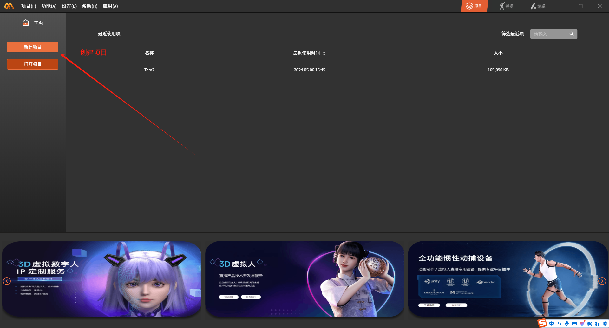
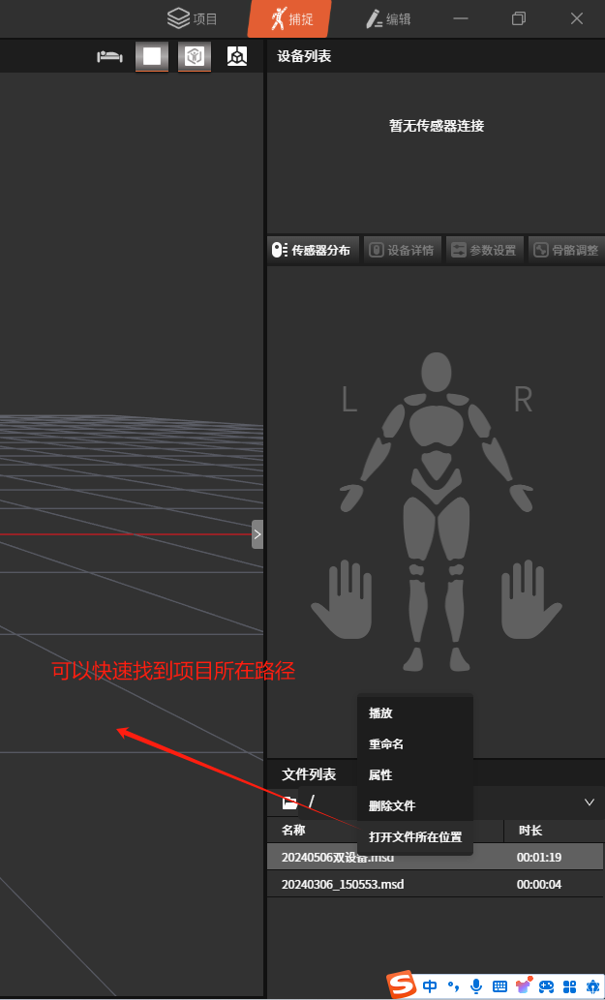
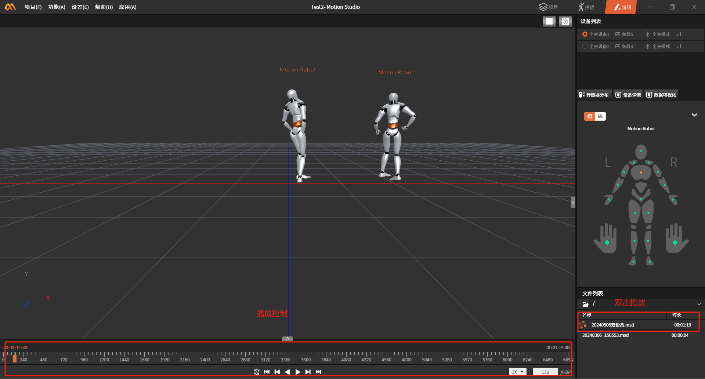
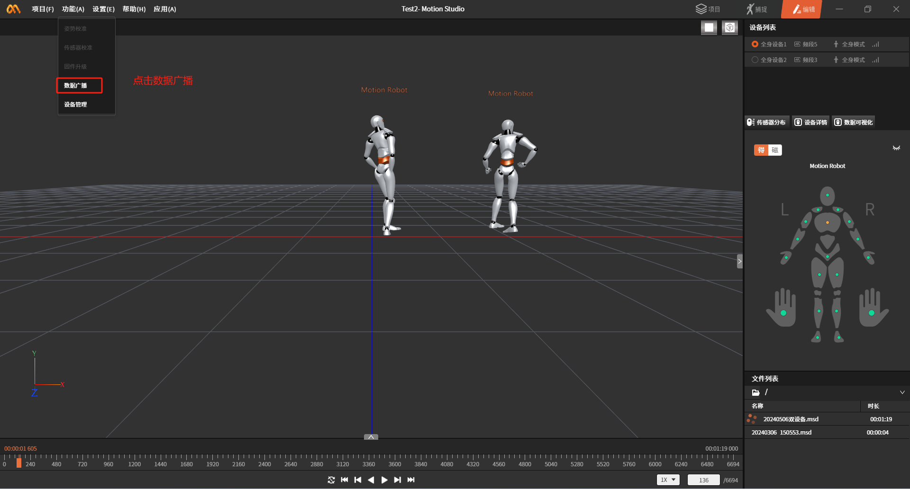
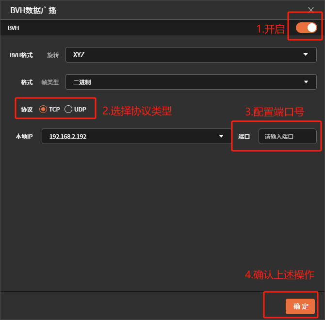

Data Import
Importing Motion Capture Files and Broadcasting Data in MotionStudio
-
Log in to MotionStudio
Download the motion capture software from the official website and log in with your phone number (contact sales to register an account).
-
Create a new project in MotionStudio
Create a project. It is recommended that you place the project in a directory that is easy for you to find (this path will be used later).

-
Import motion capture data files and configuration
3.1 Import the motion capture data description file
Motion capture data description file
Please view the attachment "20240506双设备.msd" on DingTalk Docs
Place the file in the DataFile directory under the project path. For example: C:\xxx\xxx\Desktop\temp\MS\Test2\DataFile

3.2 Import the motion capture data file
Motion capture data file
Please view the attachment ".vihchzpt03tjute65dln8x9apry72h4w_9000_1_msdf" on DingTalk Docs
Place the motion capture data file in the DataFile\.dfs folder. For example: C:\xxx\xxx\Desktop\temp\MS\Test2\DataFile\.dfs
3.3 Modify the motion capture data description file
Open the description file with a text editor or other tool.
Use Ctrl+F to search for the keyword "DataFile" and replace the original file path (C:\Users\16637\Desktop\temp\MS\Test2\DataFile) with your own project path. There are three places that need to be modified.
3.4 Play the motion capture data
If the configuration above is correct, you will see the "20240506双设备.msd" file in the file list. Double-click the file to play the recorded motion capture data.

-
Enable data broadcasting

